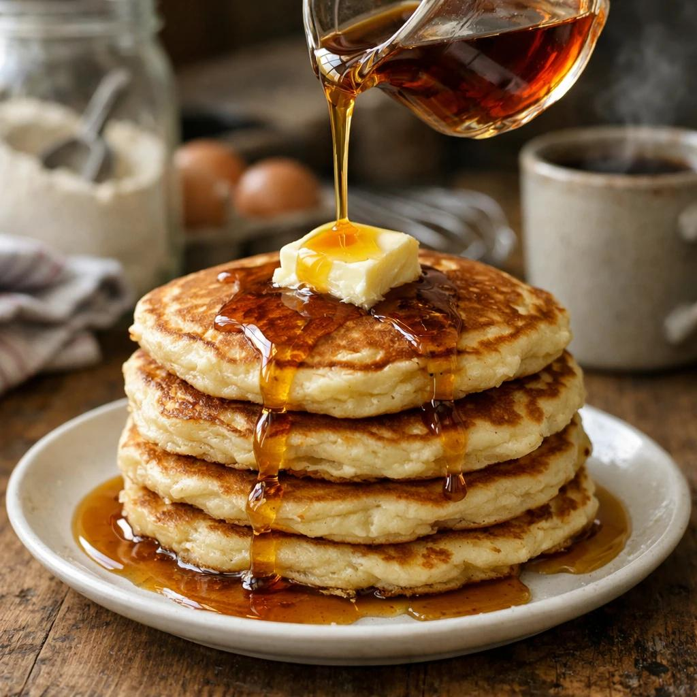

Home
Pancakes

Pancakes are soft, fluffy, and delicious breakfast treats made from a simple batter of flour, milk, eggs, and sugar. They are cooked on a hot pan until golden brown and are often served with maple syrup, honey, butter, or fresh fruits.
Ingredients
- 1 cup all-purpose flour
- 1 tablespoon sugar
- 1 teaspoon baking powder
- 1/4 teaspoon salt
- 1 cup milk
- 1 large egg
- 2 tablespoons melted butter
- 1 tablespoon vanilla extract
- butter or oil for cooking
Steps
- In a large bowl, whisk together the flour, sugar, baking powder, and salt.
- In another bowl, whisk together the milk, egg, melted butter, and vanilla extract.
- Pour the wet ingredients into the dry ingredients and stir until just combined. Do not overmix; it's okay if there are a few lumps.
- Heat a non-stick skillet or griddle over medium heat and lightly grease it with butter or oil.
- Pour 1/4 cup of batter onto the skillet for each pancake. Cook until bubbles form on the surface and the edges look set, about 2-3 minutes.
- Flip the pancakes and cook for another 1-2 minutes until golden brown and cooked through.
- Remove from the skillet and keep warm. Repeat with the remaining batter.
- Serve the pancakes warm with your favorite toppings such as maple syrup, fresh fruits, or whipped cream.